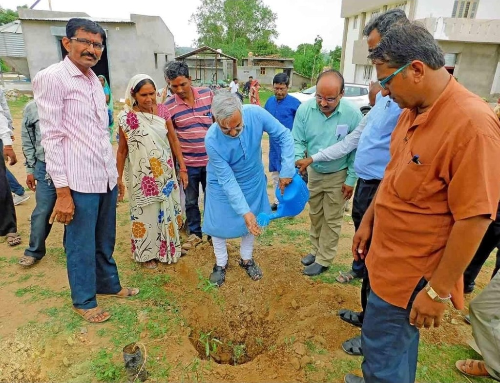
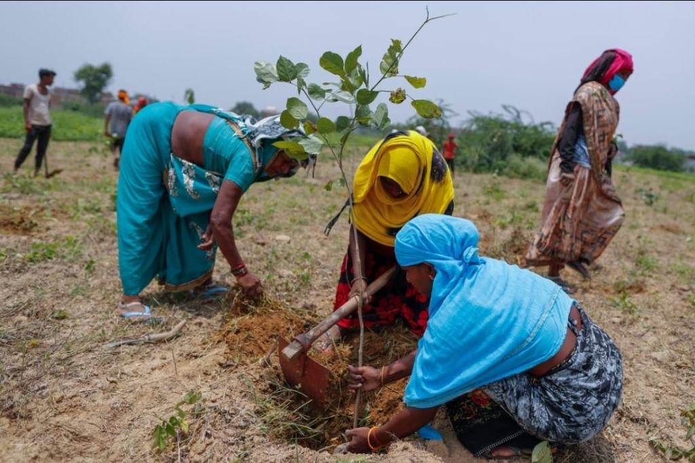
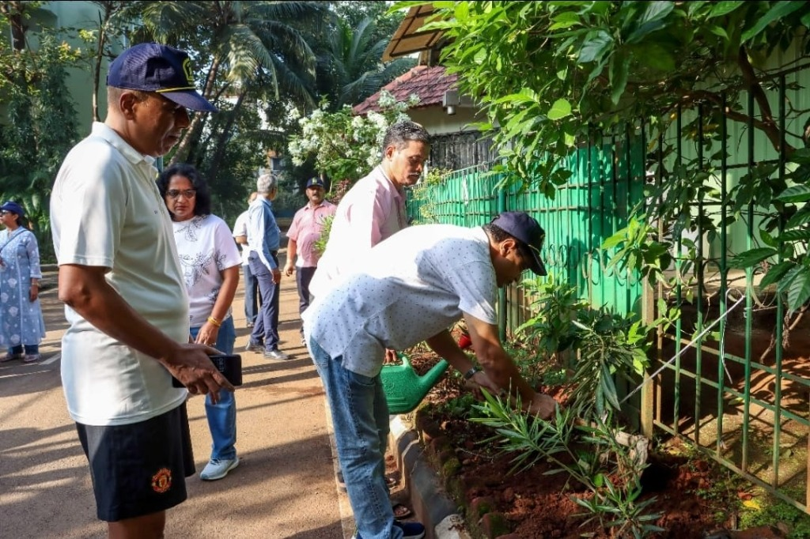
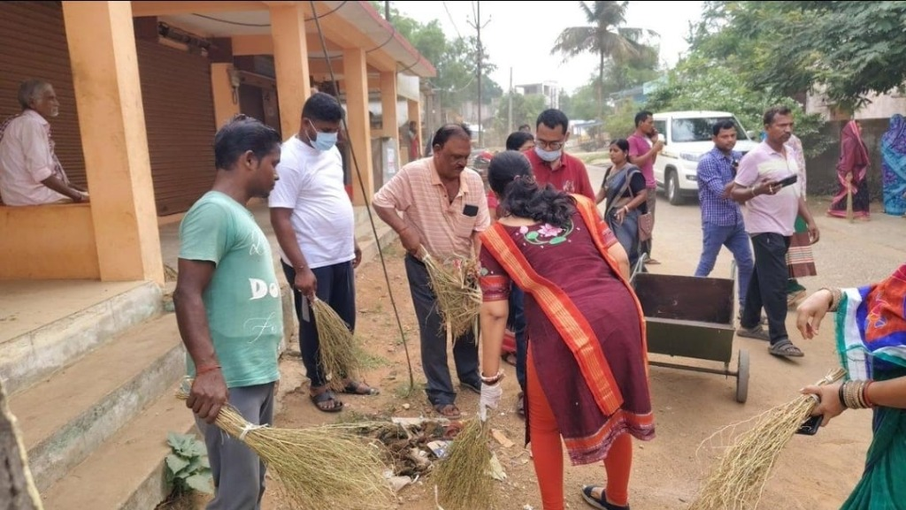
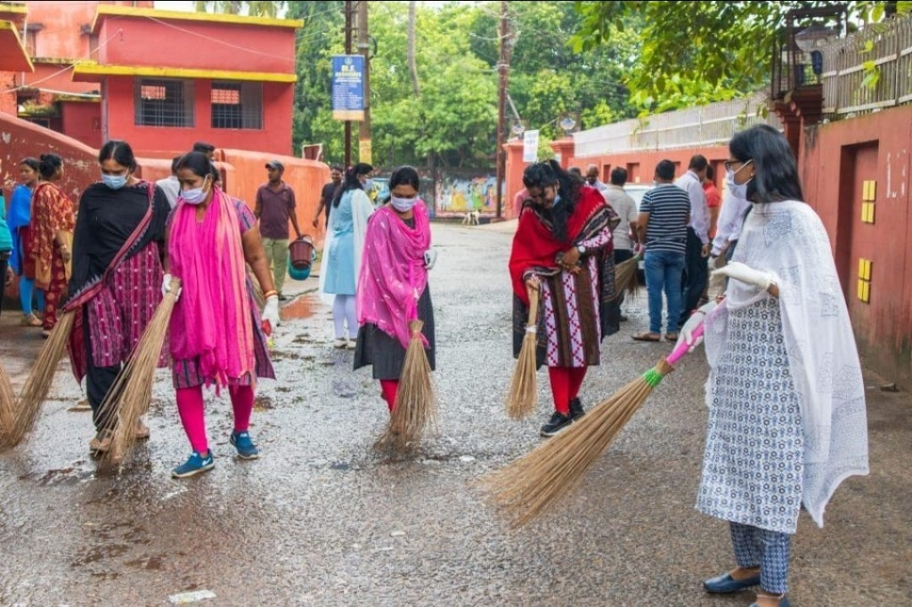

Sustained Care
Regular Watering Routine
Volunteers and local elders actively watering saplings to guarantee 90%+ survival through scorching summers.
Planting for nature
Our volunteers plant saplings in schools, colleges, villages and public places, including at the Amar Jawan memorial. We plant with the hope that each tree will grow and give shade, clean air and shelter for birds for many years.

Saving plants by watering and care
Our volunteers return to water the plants, protect them and make sure they survive. We also encourage students and villagers to take responsibility for the plants around them.

Volunteers and local elders actively watering saplings to guarantee 90%+ survival through scorching summers.

Protecting young plants with tree guards and encouraging villagers and students to adopt plants near their premises.
Environment awareness
We visit schools, colleges and villages to talk about why trees matter and how to save water. We also raise awareness about air pollution, and about keeping our surroundings clean and green.

Hands-on clean-up drives clearing plastic litter, dry waste, and debris from village roads to foster community hygiene.

Uniting youth and women volunteers to sweep roadways, clear stagnant areas, and educate households on daily segregation.
Water conservation
In a dry and sun-drenched region like Ballari, protecting fresh water is essential for human dignity and ecological survival.
Save-water campaigns conducted in schools and villages, educating families on preventing tap leakage, recycling greywater, and respecting groundwater reserves.
Drinking-water points set up on buses and at KSRTC bus stands for the public during harsh 42°C Ballari summers, serving cool, hygienic water to thousands of commuters.
Partnering with the Transport Department and local authorities to raise awareness about vehicle emissions, roadside tree planting, and keeping our air breathable.
Join our green mission
Volunteer your weekend to plant saplings, donate watering supplies, or introduce our green team to a school or village in need of tree cover.